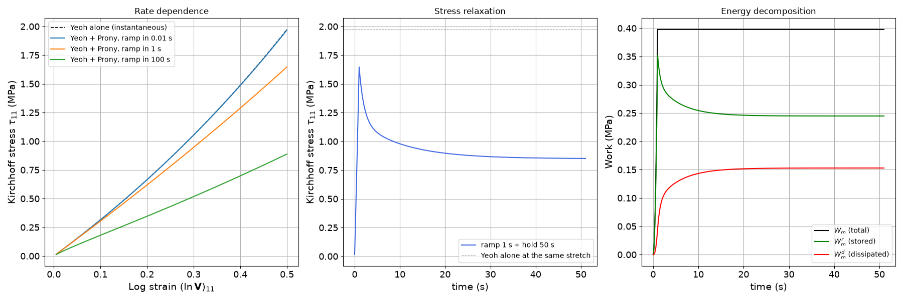

Note
Go to the end to download the full example code.
Modular UMAT: Hyperelastic Block with Prony Branches (Finite-Strain Viscoelasticity)
Composes a "MODUL" material from a Yeoh hyperelastic block and a
generalized-Maxwell viscoelastic mechanism (Prony branches), and drives it
under finite strain (NLGEOM, control type "logarithmic", corate log_R): a
rubber-like solid whose stiffness relaxes with time.
How the two compose. Under NLGEOM the solver hands the model the logarithmic
strain ln V, the hyperelastic block is a stored-energy function of the elastic
part ln V - eps_v (through b_el = exp(2 eps_el)), and each Prony branch
is a Maxwell element living on that same logarithmic measure: branch i carries
the stress L_i : (ln V - eps_v_i) and flows through its viscosity tensor
H_i(etaB, etaS). The elasticity block therefore plays the instantaneous
(glassy) role: at t = 0 the response is the Yeoh potential itself, and as the
branches relax the stress drops toward a long-term response obtained by
subtracting the branch strains through the ground-state compliance of the
potential. That long-term response is not itself a hyperelastic potential, so
this is not the classical rubber model of an equilibrium spring carrying
Maxwell branches; it is the Hencky-space linear-viscoelastic overlay of the
modular framework, exact in the small-strain limit and rate-consistent at
large stretch.
Two consequences worth keeping in mind when calibrating:
the branch moduli must stay below the ground-state modulus of the potential,
sum_i E_i < E_0withE_0built fromK = kappaandmu = 2 C10(nothing validates this, and a violation gives a negative long-term stiffness);a branch is described by its modulus and viscosities, so a relaxation time
tauis entered asetaS = tau * mu_iandetaB = tau * K_i.
The script runs the same ramp to ln V = 0.5 (stretch 1.65) at three rates, bracketing the instantaneous (pure Yeoh) and the long-term responses, then a ramp-and-hold relaxation with its energy decomposition.
Both the material and the loading path are built in Python, and the results come back in memory.
import numpy as np
import matplotlib.pyplot as plt
from simcoon import solver
from simcoon.modular import ModularMaterial, YeohElasticity, Viscoelasticity
plt.rcParams["figure.figsize"] = (18, 6)
1. Compose the constitutive model
A Yeoh potential \(W = C_{10}(\bar I_1 - 3) + C_{20}(\bar I_1 - 3)^2
+ C_{30}(\bar I_1 - 3)^3 + \kappa (J \ln J - J + 1)\) with a nearly
incompressible bulk modulus, and two Prony branches with relaxation times of
1 s and 10 s. The branches are given as (E_i, nu_i, etaB_i, etaS_i); the
helper below builds them from a modulus and a relaxation time.
C10, C20, C30, kappa = 0.5, -0.02, 0.002, 500.0 # MPa
mu0 = 2.0 * C10
E0 = 9.0 * kappa * mu0 / (3.0 * kappa + mu0) # ground-state Young's modulus
def prony_branch(E, nu, tau):
"""(E, nu, etaB, etaS) for a Maxwell branch relaxing in ``tau`` seconds."""
mu = E / (2.0 * (1.0 + nu))
K = E / (3.0 * (1.0 - 2.0 * nu))
return (E, nu, tau * K, tau * mu)
branches = (prony_branch(1.0, 0.49, 1.0), prony_branch(0.5, 0.49, 10.0))
assert sum(b[0] for b in branches) < E0, "branch moduli must stay below E_0"
yeoh = YeohElasticity(C10=C10, C20=C20, C30=C30, kappa=kappa)
mat = ModularMaterial(elasticity=yeoh, mechanisms=[Viscoelasticity(terms=branches)])
mat_inst = ModularMaterial(elasticity=yeoh) # instantaneous response: pure Yeoh
print(mat.summary())
print(f"ground-state E_0 = {E0:.3f} MPa, long-term E_inf = "
f"{E0 - sum(b[0] for b in branches):.3f} MPa")
ModularMaterial:
Elasticity: YeohElasticity
volumetric=log, omega=0.0, C10=0.5, C20=-0.02, C30=0.002, kappa=500.0, alpha=0.0
Mechanisms (1):
[0] Viscoelasticity
2 Prony terms (E_i, nu_i, etaB_i, etaS_i)
[0] E=1.0, nu=0.49, etaB=16.666666666666654, etaS=0.33557046979865773
[1] E=0.5, nu=0.49, etaB=83.33333333333327, etaS=1.6778523489932886
nprops=21, nstatev=15
ground-state E_0 = 2.998 MPa, long-term E_inf = 1.498 MPa
2. Loading paths
Uniaxial tension in the log-strain / Kirchhoff-stress conjugate pair: the axial log strain is driven, the five other components are held stress-free.
uniaxial = ["strain"] + ["stress"] * 5
def ramp(eps, duration, ninc=100):
return solver.StepMeca(control=uniaxial, value=[eps, 0, 0, 0, 0, 0],
time=duration, ninc=ninc, Dn_mini=1.0e-3)
def hold(eps, duration, ninc=200):
return solver.StepMeca(control=uniaxial, value=[eps, 0, 0, 0, 0, 0],
time=duration, ninc=ninc)
def run(material, steps):
return solver.solve(
solver.Block(steps=steps, control_type="logarithmic"),
material.umat_name, material.props, material.nstatev,
corate="logarithmic_R",
)
eps_max = 0.5 # ln V = 0.5, stretch 1.65
3. Rate sweep
The same ramp in 0.01 s (fast against both branches), 1 s and 100 s (slow against both), compared with the pure Yeoh block.
rates = {"0.01 s": 0.01, "1 s": 1.0, "100 s": 100.0}
sweep = {label: run(mat, [ramp(eps_max, t)]) for label, t in rates.items()}
inst = run(mat_inst, [ramp(eps_max, 1.0)])
4. Ramp and hold
Ramp to ln V = 0.5 in 1 s, then hold 50 s: the stress relaxes from the instantaneous level toward the long-term one.
relax = run(mat, [ramp(eps_max, 1.0), hold(eps_max, 50.0)])
tau11, t = relax["Kirchhoff"][0], relax["Time"]
Wm, Wm_r, _, Wm_d = relax["Wm"]
i_peak = int(np.argmin(np.abs(t - 1.0)))
print(f"relaxation: tau_11 = {tau11[i_peak]:.3f} MPa at the end of the ramp, "
f"{tau11[-1]:.3f} MPa after {t[-1] - t[i_peak]:.0f} s of hold")
relaxation: tau_11 = 1.648 MPa at the end of the ramp, 0.851 MPa after 50 s of hold
5. Plot
fig = plt.figure()
ax1 = fig.add_subplot(1, 3, 1)
plt.grid(True)
plt.tick_params(axis="both", which="major", labelsize=13)
plt.xlabel(r"Log strain $(\ln \mathbf{V})_{11}$", size=14)
plt.ylabel(r"Kirchhoff stress $\tau_{11}$ (MPa)", size=14)
plt.plot(inst["LogStrain"][0], inst["Kirchhoff"][0], "k--", lw=1.2,
label="Yeoh alone (instantaneous)")
for label, res in sweep.items():
plt.plot(res["LogStrain"][0], res["Kirchhoff"][0], lw=1.5,
label=f"Yeoh + Prony, ramp in {label}")
plt.legend(loc="best")
plt.title("Rate dependence")
ax2 = fig.add_subplot(1, 3, 2)
plt.grid(True)
plt.tick_params(axis="both", which="major", labelsize=13)
plt.xlabel("time (s)", size=14)
plt.ylabel(r"Kirchhoff stress $\tau_{11}$ (MPa)", size=14)
plt.plot(t, tau11, c="royalblue", lw=1.5, label="ramp 1 s + hold 50 s")
plt.axhline(y=inst["Kirchhoff"][0][-1], color="0.6", linestyle="--", lw=0.8,
label="Yeoh alone at the same stretch")
plt.legend(loc="best")
plt.title("Stress relaxation")
ax3 = fig.add_subplot(1, 3, 3)
plt.grid(True)
plt.tick_params(axis="both", which="major", labelsize=13)
plt.xlabel("time (s)", size=14)
plt.ylabel("Work (MPa)", size=14)
plt.plot(t, Wm, c="black", label=r"$W_m$ (total)")
plt.plot(t, Wm_r, c="green", label=r"$W_m^r$ (stored)")
plt.plot(t, Wm_d, c="red", label=r"$W_m^d$ (dissipated)")
plt.legend(loc="best")
plt.title("Energy decomposition")
plt.tight_layout()
plt.show()

Total running time of the script: (0 minutes 0.232 seconds)